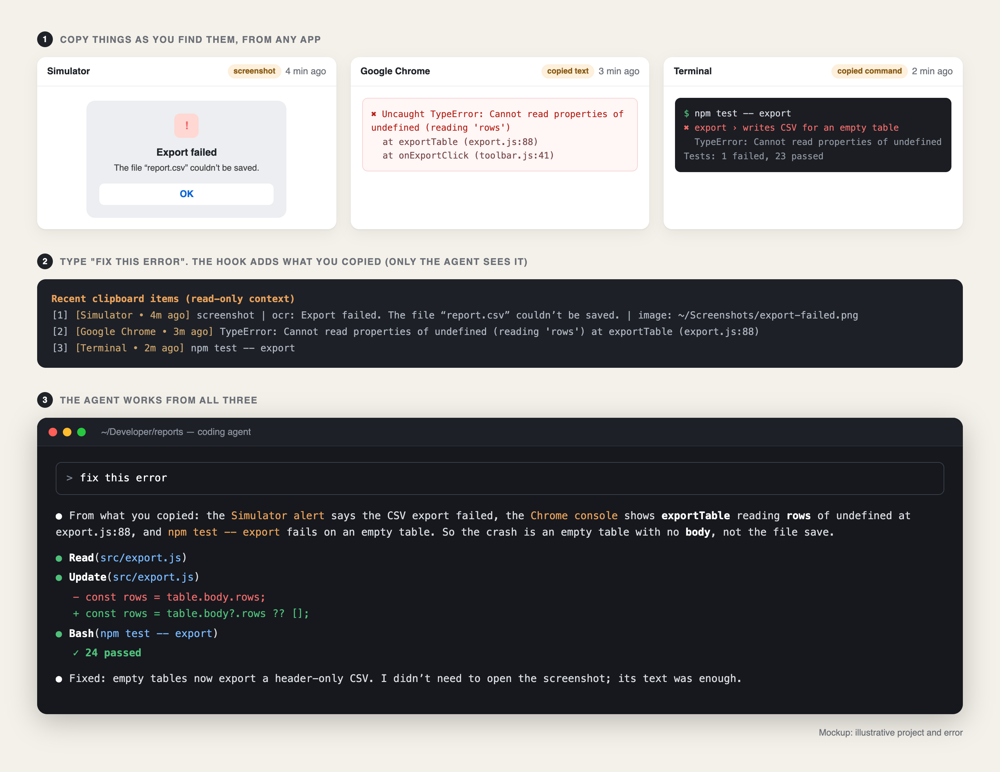

Ctrl+V pastes a screenshot into Claude Code. But by the time I ask for a fix I've copied three things from three apps. A prompt hook hands the agent all of them, so the prompt is just "fix this error".
Key findings
Here's a bug report I used to write several times a day.
The export fails in the simulator. I take a screenshot of the alert. I switch to Chrome, open the console and copy the stack trace. I switch to the terminal, scroll up and copy the test command that failed. Then I go back to Claude Code and start assembling: Ctrl+V for the screenshot, then the stack trace, then the command, then a sentence explaining how they fit together.
To be fair to Claude Code, the pasting part works. On a Mac, Ctrl+V (not ⌘V, which is the terminal's own text paste) attaches the image on your clipboard to your prompt. But the clipboard only holds the last thing you copied. By the time I was ready to ask, the screenshot had been replaced by the stack trace, and the stack trace by the command. So either I went back and copied each one again, in order, or, more often, I didn't bother. I described the error in words, and the agent guessed.
Now I copy things as I find them and type "fix this error".

A coding agent knows two things: what's in your prompt and what it reads with its own tools. It can open any file in your repository, run your tests and read git history. It can't see your clipboard, the browser console you were looking at or the alert in the simulator. Everything you saw on the way to asking has to be carried across by hand.
But your Mac has already seen it. If you use a clipboard manager, every one of those copies is sitting in its history, with the app it came from and when. The missing step is getting the relevant few into the agent's context at the moment you ask.
Claude Code hooks run a script at fixed moments, and one of those moments is just before your prompt is sent. A UserPromptSubmit hook can add text to the agent's context alongside your message. Codex has the same kind of hook.
That's where L2Cache, the Mac app I build, hands over what I've copied. When I type a prompt, the hook looks at my recent clips and adds a short, labelled block. For the bug above, the block looks like this (same illustrative example as the picture):
Recent clipboard items (read-only context; mention any that are relevant to your task):
[1] [Simulator • 4m ago] screenshot | ocr: Export failed. The file "report.csv" couldn't be saved. | image: ~/Screenshots/export-failed.png
[2] [Google Chrome • 3m ago] TypeError: Cannot read properties of undefined (reading 'rows') at exportTable (export.js:88)
[3] [Terminal • 2m ago] npm test -- exportEach line says where the clip came from and how long ago, because that's half the meaning. A stack trace copied from Chrome a minute ago is probably the error you mean. The same text copied from Slack yesterday probably isn't.
A screenshot is the one clip you'd think needs the image itself. Usually it doesn't. Most error screenshots are mostly text: an alert, a log, a console panel, a failing test in Xcode. So the hook sends the text found in the screenshot, a short title and, when the screenshot was saved to my screenshots folder, the path to the file. If the text is enough, the agent just uses it. If it needs to see the layout or a colour, it opens the file itself.
It turned out the agent almost never needs to. Of 70 prompts where a screenshot came with its file path, the agent opened the image 6 times. The other 64 times the text answered the question.
That matters more than it looks. A typical screenshot of mine costs roughly 1,500 tokens as an image. Its text, cut down to fit the hook's budget, costs at most about 150. And whatever enters the context stays there: it's resent with every later request in the session, and re-read in full after a break once the prompt cache has expired. (I measured what that costs in a separate write-up.) Sending ten times less for the same answer adds up over a long session.
| Image | Text + file path | |
|---|---|---|
| Typical cost | ~1,500 tokens | ≤ ~150 tokens |
| Agent can read the error text | Yes | Yes |
| Agent can see the layout | Yes | If it opens the file |
| Times the agent opened the file | n/a | 6 of 70 |
I went through five weeks of my own Claude Code transcripts (October 7 to November 13) and counted what the hook actually passed along.
The prompts changed too. Among them: "see the screenshot", "i copied the screenshots", "i copied the correct card, use this for the mockup". None of those would mean anything to an agent on its own. With the clips attached, each one was a complete request.
Anything a hook adds rides along on every later request, so a hook that dumps your whole clipboard into the context would make things worse, not better. Most of the design is about what not to send:
The agent doesn't need you to paste. It needs what you already saw.
Ctrl+V is fine for one screenshot. Real debugging is a trail of copies across three or four apps, and the clipboard forgets all but the last. Hand the agent the last few things you copied, small, recent and labelled, send screenshots as text with the file one step away, and "fix this error" becomes a complete bug report.
Copy the screenshot (⌘⇧⌃4 copies a selection straight to the clipboard) and press Ctrl+V in Claude Code, not ⌘V. ⌘V is the terminal's text paste; Ctrl+V lets Claude Code read the image from the clipboard and attach it to your prompt.
Not by itself. It only sees what you paste and what a hook adds to your prompt. A UserPromptSubmit hook can read your recent clips, for example from a clipboard manager, and add the relevant ones as context.
Usually much cheaper. In my clips a screenshot cost roughly 1,500 tokens as an image and about 150 as text, and the agent needed the image itself only 6 times in 70.
Yes. Codex supports the same kind of prompt hook, and L2Cache installs the same one there, so both agents get the clips you copied.
More on what belongs in an agent's context, and what it should look up instead: How I built shared memory for Claude Code and Codex.
L2Cache hands Claude Code and Codex what you just copied: errors, commands and screenshots as text.
Download L2Cache for Mac